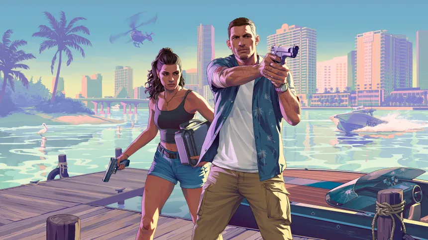
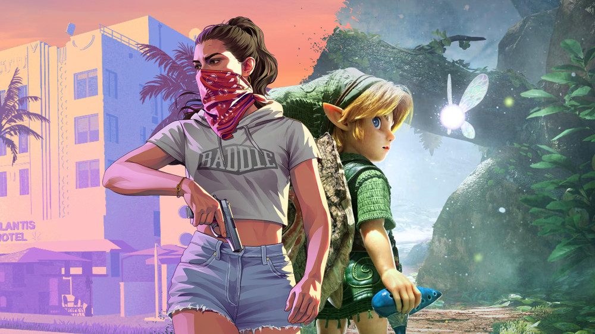
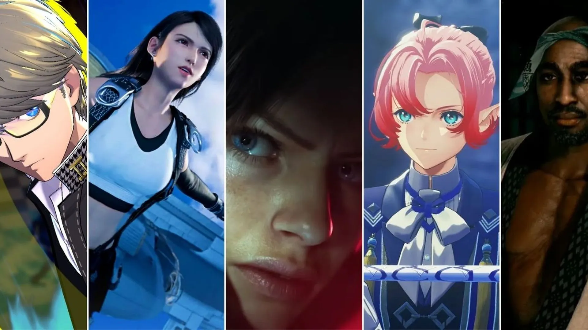

GTA 6: uno de los juegos más esperados de 2026
Rockstar Games prepara el lanzamiento de Grand Theft Auto VI, que llegará el 19 de noviembre de 2026. Volveremos a Vice City con Jason y Lucia como protagonistas.
Leer noticia completaTu portal de noticias y actualidad del mundo gaming
Descubre las últimas noticias, lanzamientos y acontecimientos del mundo de los videojuegos. En GameZone encontrarás información sobre los juegos más esperados y los eventos más importantes.

Rockstar Games prepara el lanzamiento de Grand Theft Auto VI, que llegará el 19 de noviembre de 2026. Volveremos a Vice City con Jason y Lucia como protagonistas.
Leer noticia completa
The Legend of Zelda: Ocarina of Time ha recibido una nueva versión con gráficos renovados y mejoras en su presentación. El juego se lanzo el 5 de noviembre de 2026.
Leer noticia completa
La gala más importante del año en el mundo de los videojuegos se celebrará el 10 de diciembre de 2026 en Los Ángeles.
Leer noticia completa
Comparamos dos de los lanzamientos más destacados del año, sus características y las expectativas de los jugadores.
Leer noticia completa
Repasamos algunos de los títulos anunciados y las novedades que podrían marcar el próximo año en la industria.
Leer noticia completa| Videojuego o eventos | Fecha | Estado |
|---|---|---|
| Zelda: Ocarina of Time | 5 de noviembre | Lanzado |
| Grand Theft Auto 6 | 19 de noviembre | Próximamente |
| The Game Awards 2026 | 10 de diciembre | Próximamente |
Consulta también las páginas oficiales de algunas compañías:
Los videojuegos siguen evolucionando y cada año nos sorprende con nuevas experiencias, historias y tecnologías.
Información sobre el evento: The Game Awards 2026
E3 fue uno de los evento más conocidos de la industria del videojuego.